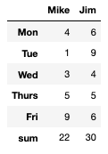
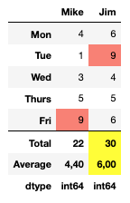

pandas.io.formats.style.Styler.concat#
- Styler.concat(other)[source]#
Append another Styler to combine the output into a single table.
- Parameters:
- otherStyler
The other Styler object which has already been styled and formatted. The data for this Styler must have the same columns as the original, and the number of index levels must also be the same to render correctly.
- Returns:
- Styler
Instance of class with specified Styler appended.
See also
Styler.clearReset the
Styler, removing any previously applied styles.Styler.exportExport the styles applied to the current Styler.
Notes
The purpose of this method is to extend existing styled dataframes with other metrics that may be useful but may not conform to the original’s structure. For example adding a sub total row, or displaying metrics such as means, variance or counts.
Styles that are applied using the
apply,map,apply_indexandmap_index, and formatting applied withformatandformat_indexwill be preserved.Warning
Only the output methods
to_html,to_stringandto_latexcurrently work with concatenated Stylers.Other output methods, including
to_excel, do not work with concatenated Stylers.The following should be noted:
table_styles,table_attributes,captionanduuidare all inherited from the original Styler and notother.hidden columns and hidden index levels will be inherited from the original Styler
csswill be inherited from the original Styler, and the value of keysdata,row_headingandrowwill be prepended withfoot0_. If more concats are chained, their styles will be prepended withfoot1_, ‘’foot_2’’, etc., and if a concatenated style have another concatenated style, the second style will be prepended withfoot{parent}_foot{child}_.
A common use case is to concatenate user defined functions with
DataFrame.aggor with described statistics viaDataFrame.describe. See examples.Examples
A common use case is adding totals rows, or otherwise, via methods calculated in
DataFrame.agg.>>> df = pd.DataFrame( ... [[4, 6], [1, 9], [3, 4], [5, 5], [9, 6]], ... columns=["Mike", "Jim"], ... index=["Mon", "Tue", "Wed", "Thurs", "Fri"], ... ) >>> styler = df.style.concat(df.agg(["sum"]).style)

Since the concatenated object is a Styler the existing functionality can be used to conditionally format it as well as the original.
>>> descriptors = df.agg(["sum", "mean", lambda s: s.dtype]) >>> descriptors.index = ["Total", "Average", "dtype"] >>> other = ( ... descriptors.style.highlight_max( ... axis=1, subset=(["Total", "Average"], slice(None)) ... ) ... .format(subset=("Average", slice(None)), precision=2, decimal=",") ... .map(lambda v: "font-weight: bold;") ... ) >>> styler = df.style.highlight_max(color="salmon").set_table_styles( ... [{"selector": ".foot_row0", "props": "border-top: 1px solid black;"}] ... ) >>> styler.concat(other)

When
otherhas fewer index levels than the original Styler it is possible to extend the index inother, with placeholder levels.>>> df = pd.DataFrame( ... [[1], [2]], index=pd.MultiIndex.from_product([[0], [1, 2]]) ... ) >>> descriptors = df.agg(["sum"]) >>> descriptors.index = pd.MultiIndex.from_product([[""], descriptors.index]) >>> df.style.concat(descriptors.style)